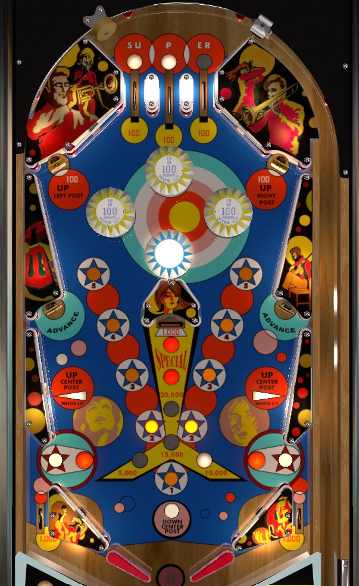

Super Star is the replay-version. Big Star is the add-a-ball version. This guide focuses on Super Star, with differences observed in Big Star addressed at the end of the guide.
Not to be confused with Super Star (Chicago Coin, 1975).
As of the time of writing this page (4 Feb 2025), the most recent VPX recreation of Super Star and Big Star incorrectly implements some rules and scoring features. This guide was written to align with the rules of the physical machine as closely as possible.
Complete the top lanes to light the center saucer for extra ball. Make the 1-2-3-4-5 rollover buttons in order to add 5,000 points to the center saucer point value: trying to advance the center saucer past 20,000 will also light it for extra ball. Upper standup targets raise posts that partially block the out lanes. Middle side standup targets spot up to 4 of the 1-2-3-4-5 rollover buttons. Rebound rubbers just below the middle side standup targets will raise the center post, but only if thier respective out lane post is not raised.
The below picture is of Super Star, which was taken from the VPX recreation by JPSalas.
Top lanes score 100 points. Roll through a top lane to light it, and the correspondingly positioned yellow pop bumper. Bumpers score 10 points, or 100 when lit. (The blue pop bumper that is always on scores 100 points.) Lighting all 3 top lanes instantly causes all top lanes and all yellow bumpers to unlight, and lights the center saucer for an extra ball instead. On easy settings, the SU and ER lanes can be tied together, so that rolling through either one gives credit for both. On default/hard settings, all 3 lanes must be collected individually.
The center saucer value always starts at 5,000 points. Hit a lit rollover button to advance it to the next number. Hit a lit rollover button labelled 5 resets the lit button back to 1 and adds 5,000 points to the saucer value. The center saucer value maxes out at 20,000 points; completing 1-2-3-4-5 when the value is maxed out will light the center saucer for an extra ball as well. Collecting any saucer value resets the value to 5,000 points.
A well-aimed shot from either flipper can hit all of the 1-2-3-4-5 rollover buttons in order in one fell swoop, guaranteeing a saucer value advance; it's also just really satisfying to do. The side standup targets labelled advance about halfway up the table will spot 2, 3, or 4 rollover buttons for you, depending on game settings.
The upper left and upper right standup targets score 100 points and raise a post that partially blocks the out lane on the same side of the table. It is possible to drain around an out lane post, but they are helpful more often than not. The out lane posts are lowered if the ball drains, if the center saucer is made, or if the Advance target on the side of the table with a raised out lane post is hit while the drop target blocking the center saucer is down.
Rebound switches within the walls just below the blue Advance targets on both sides of the playfield will raise the center post between the flippers when lit. The left side will not be lit if the left out lane post is raised, and the same is true on the right side regarding the right out lane post. Thus, the only way to get all 3 posts raised at once is to raise the center post first, then raise the two side posts. The center post is lowered whenever the ball drains and whenever the Down Center Post button, positioned very close to the post itself, is pressed. Because this button is so close to the center drain, get in the habit of pretending the center post will never be there when you need it to be.
There are no in lanes. Flippers back up directly to the slingshots. Full-size 3 inch flippers are used. Slingshots score 10 points. Out lanes score 1,000 points.
There is no end of ball bonus. The only way to earn a replay is via the match function or attaining a replay score, if replays are enabled at all. Playfield specials always score either 1 extra ball or 10,000 points.